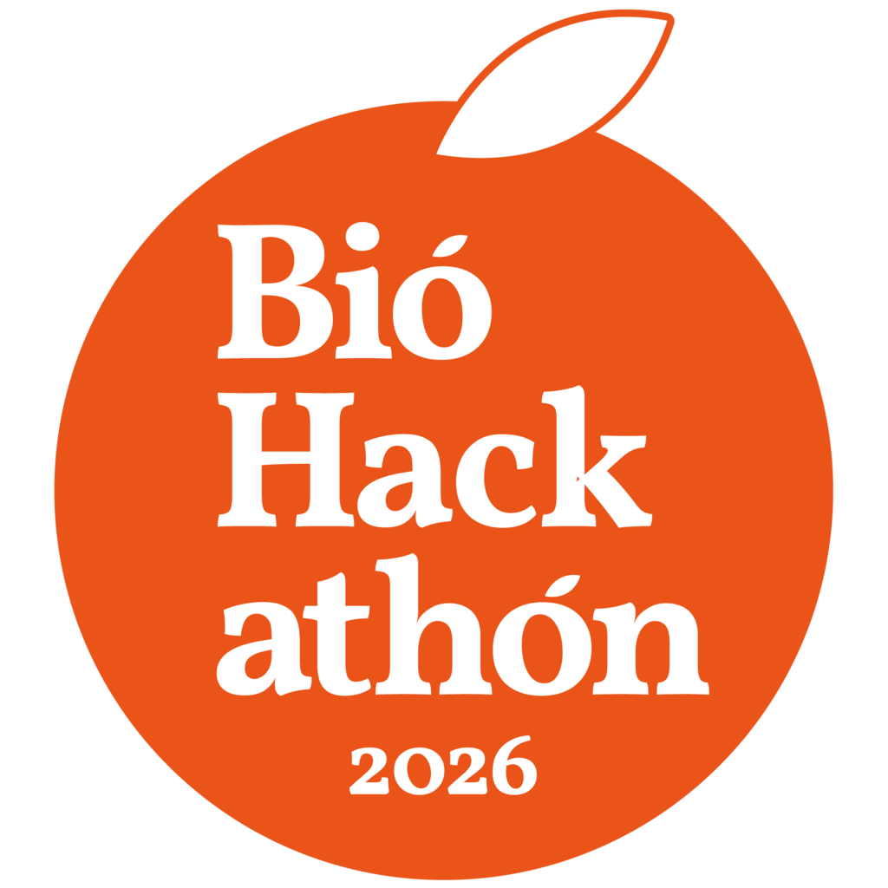

Finds which taxa observed in an iNaturalist project are still missing a Wikipedia article — inspired by iNotListed, powered client-side by Comunica federating live SPARQL endpoints. No backend, no build step — open this file and it runs.
| Taxon | iNaturalist | Wikidata | GBIF | Commons | en | ja | es | Plazi | BHL |
|---|
wdt:P225), and pulls cross-reference
identifiers already stored on that item: GBIF (P846), iNaturalist taxon
(P3151), Wikimedia Commons category (P373). This is the same
reconciliation step as iNotListed, just run live in your browser instead of a Python CLI.
sitelink
exists (schema:about / schema:isPartOf). Anything missing is
flagged — that's the "not listed" signal.
qlever.ld.plazi.org/sparql)
for how many published treatments exist for each species (dwc:genus +
dwc:species, joined to treatment:augmentsTaxonConcept /
definesTaxonConcept). Plazi's coverage is the opposite shape of BHL's here —
narrow (only taxa with a digitized taxonomic revision or original description) but,
when present, precise: exact treatment title, DOI and author.
koetai.semscape.org) with a federated SPARQL query: it starts in
a named graph of BHL page metadata (Darwin Core terms), then reaches out via
SERVICE to QLever for the Wikidata item and identifiers, and a nested
SERVICE to WDQS for the Wikipedia sitelink — three data sources, one query,
no data ever copied between them. Coverage in this graph is experimental and partial.
{{Speciesbox}} on English
Wikipedia, {{Ficha de taxón}} on Spanish, {{生物分類表}} on
Japanese) plus a lead sentence, reference and {{Taxonbar}}. These are drafts
only — nothing is ever posted automatically; review formatting and notability before
publishing.
Query timings for the current run are logged below the status line while it runs.